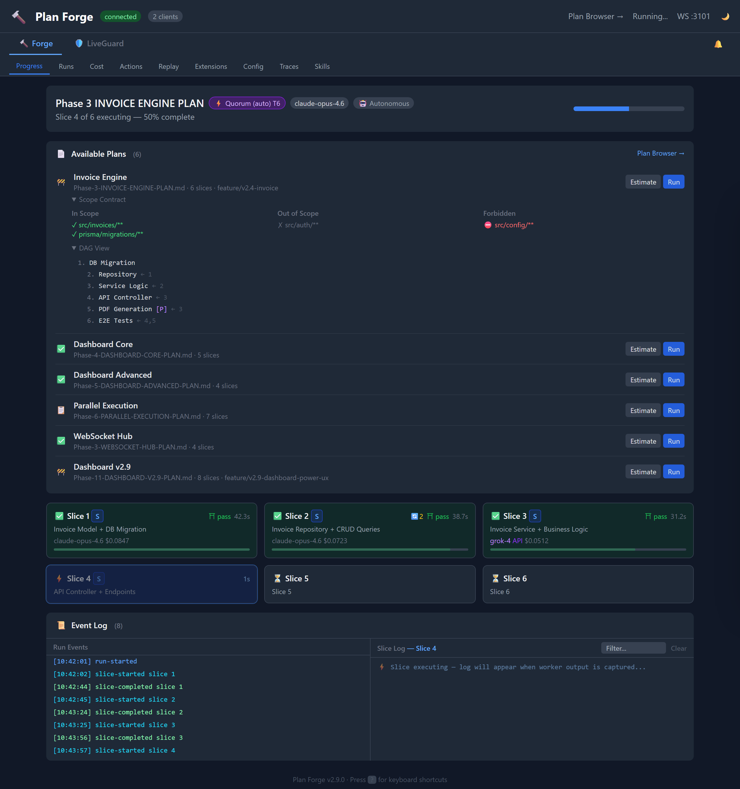
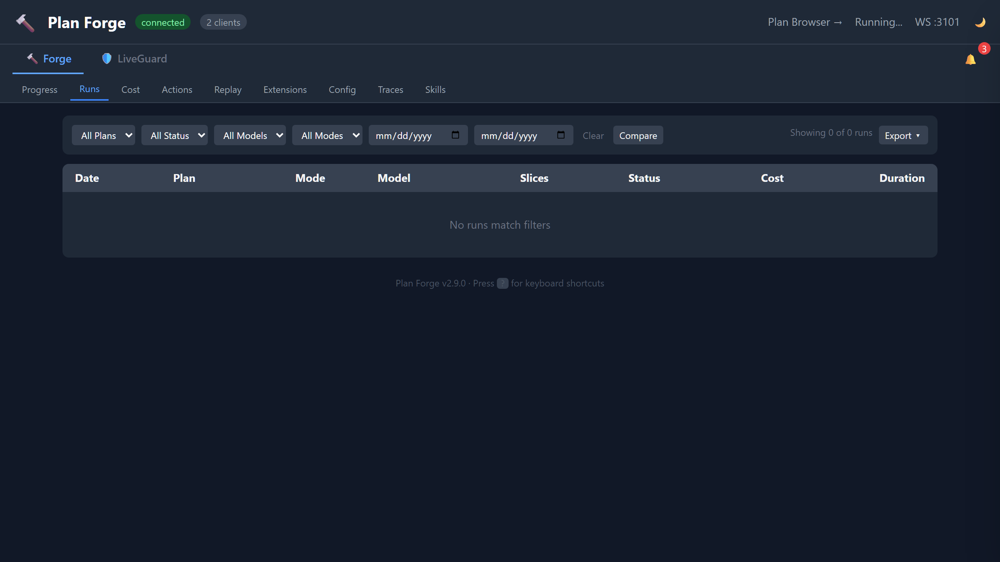
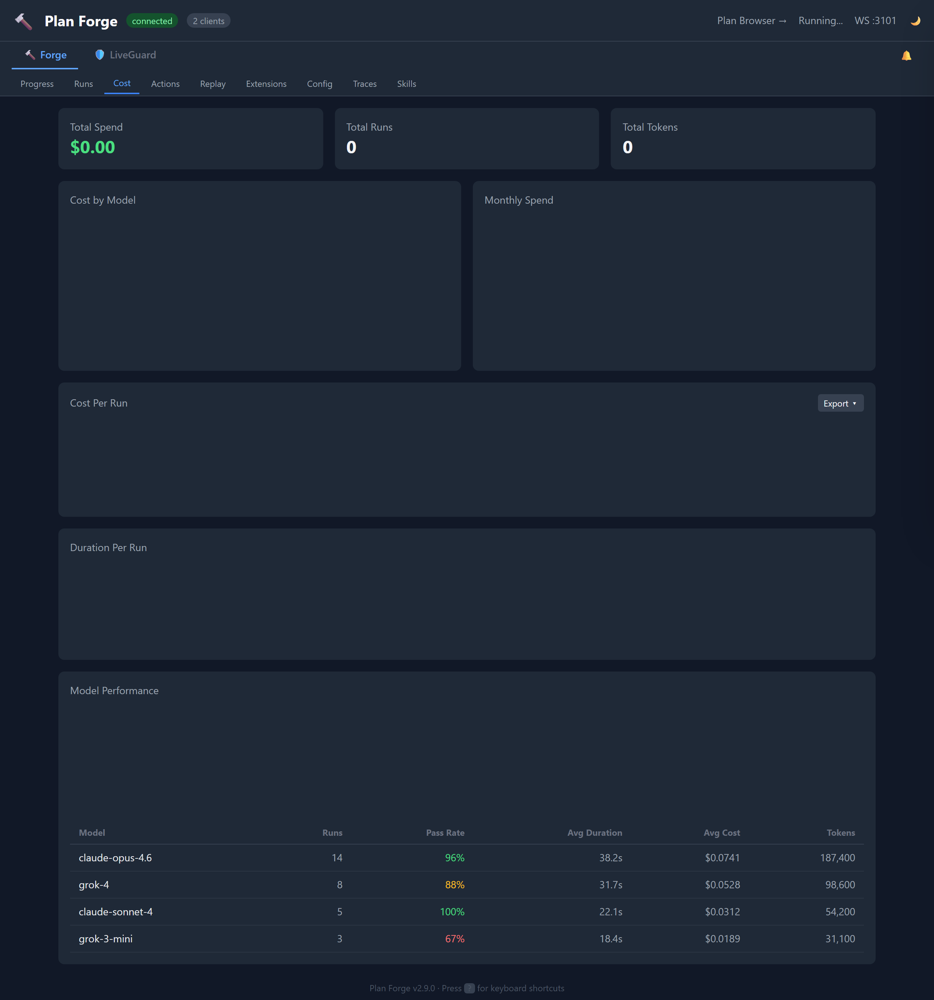
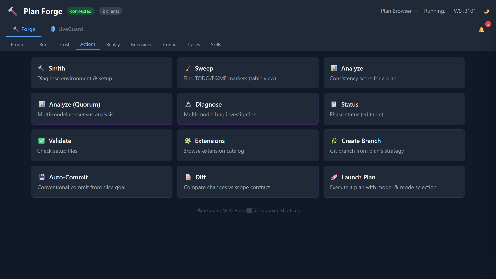
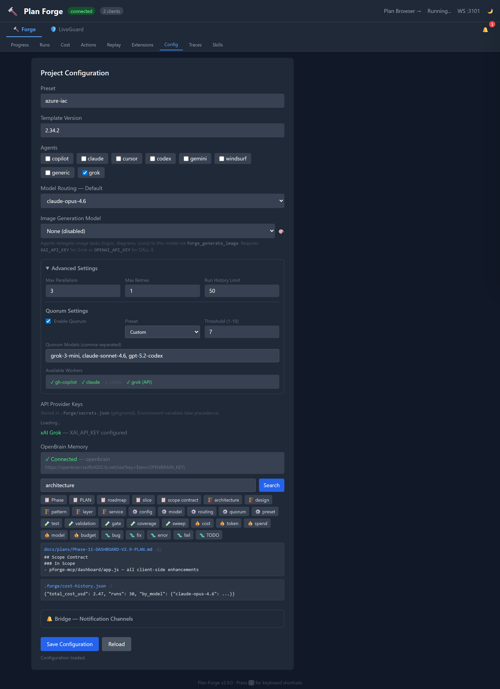
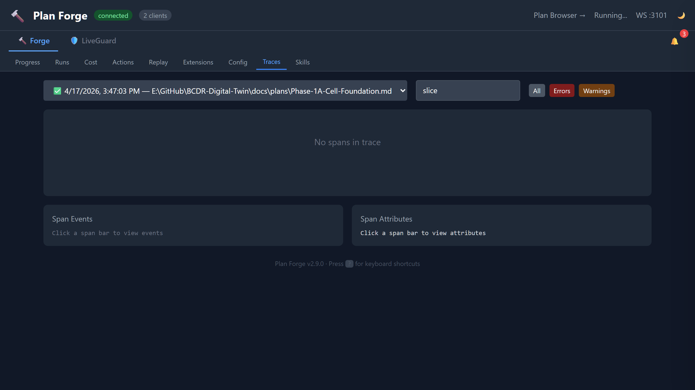
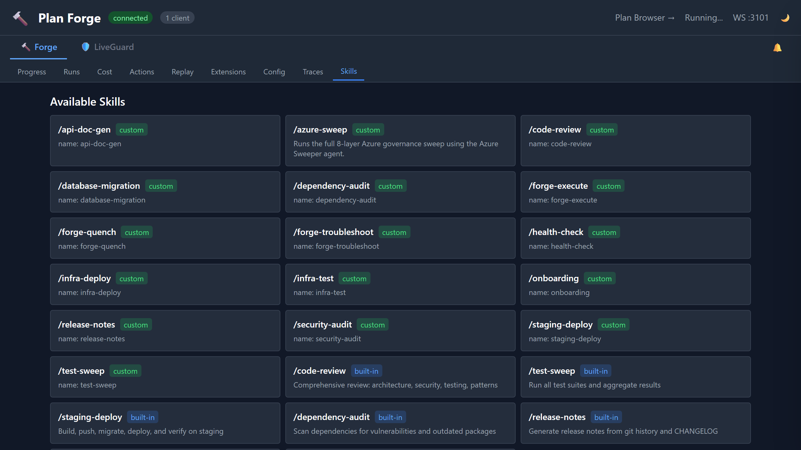
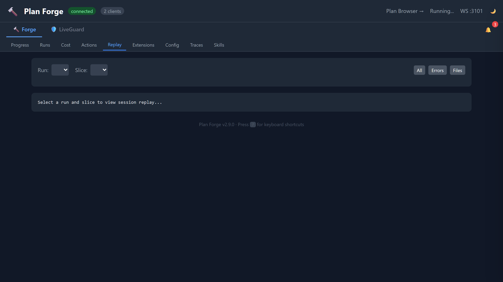
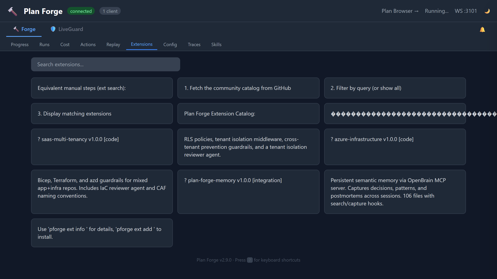

Dashboard
Real-time visibility into plan execution, costs, traces, and configuration. 9 tabs, zero config, served at localhost:3100/dashboard.
The dashboard launches automatically when the MCP server starts. No separate install required.
Via MCP (auto-starts with VS Code)
// .vscode/mcp.json — auto-configured by setup
{
"servers": {
"plan-forge": {
"command": "node",
"args": ["pforge-mcp/server.mjs"]
}
}
}
Dashboard-only mode (no MCP stdio)
node pforge-mcp/server.mjs --dashboard-only # Dashboard → http://localhost:3100/dashboard # WebSocket → ws://localhost:3101
Live view of the currently executing plan. Each slice is rendered as a card showing its status (pending, executing, completed, failed), the AI model used, execution time, and token cost. The progress bar updates in real time via WebSocket events. Slices using API-based models like Grok display a purple API badge.

Historical log of every plan execution. Each row shows the plan file, execution mode (auto, assisted, estimate), total slices, pass/fail status, cost, and timestamp. Click any run to drill into per-slice details. Runs persist across sessions in run-history.json.

Cumulative cost visualization across all runs. Tracks input tokens, output tokens, and total cost per model. The chart shows cost over time so you can spot trends, compare model efficiency, and catch runaway sessions early. Data comes from cost-history.json.

One-click access to common forge operations. Run Smith (environment diagnostics), Sweep (TODO/FIXME detection), Analyze (plan consistency scoring), Analyze (Quorum) (multi-model consensus analysis), Diagnose (multi-model bug investigation), Status (roadmap phase status), Validate (setup file checks), and Extensions (catalog browser). Results display inline below each card.

View and edit project configuration without touching files. Set the active preset, template version, enabled agents (Claude, Cursor, Codex), and default model routing. The API Providers section shows which external model providers are configured — set XAI_API_KEY to enable Grok models (grok-4, grok-3, grok-3-mini). Changes save to .forge/config.json.

OTLP-compatible execution trace viewer. Each plan run produces a trace with spans for every slice, gate check, and tool invocation. Select a run to see its full span tree with timing, status codes, and error details. Compatible with OpenTelemetry collectors for export to Jaeger, Zipkin, or Azure Monitor.

Monitor multi-step skill executions in real time. Skills like /code-review, /database-migration, and /staging-deploy emit step-level events via WebSocket. Each step shows its status (pending, running, completed, failed) with a progress indicator. Useful for long-running workflows where you need visibility into intermediate steps.

Session replay for completed runs. Select any historical run and replay its execution timeline step by step. See exactly which slices ran, when gates passed or failed, and how costs accumulated. Useful for post-mortems, team reviews, and debugging failed executions.

Browse and install community extensions directly from the dashboard. Each extension card shows the name, description, author, version, and what it provides (agents, instructions, prompts, MCP config). Click to view the README or install with one click. Extensions are curated in the community catalog.

Port 3101 broadcasts real-time events — slice progress, cost updates, skill steps, trace spans. The dashboard auto-reconnects on disconnect.
Port 3100 serves the dashboard UI and exposes JSON endpoints for run history, cost data, config, traces, and action execution.
Run history, cost records, and traces persist in .forge/ JSON files. Data survives server restarts and is scoped per project.